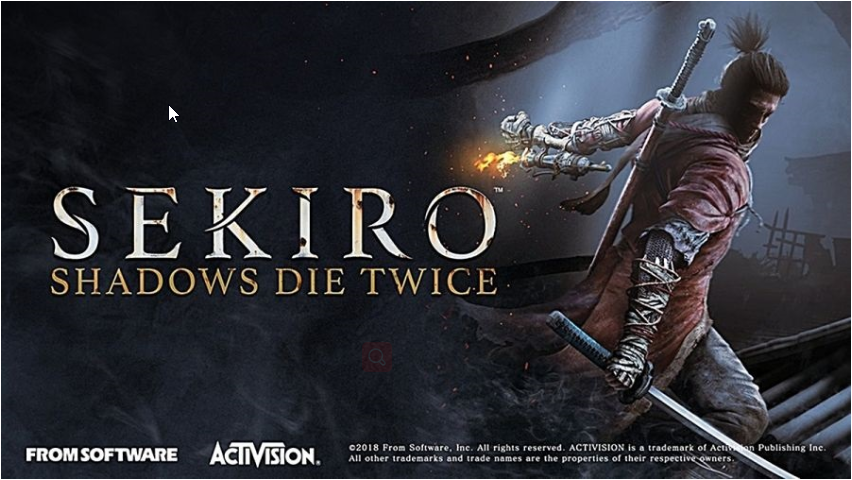
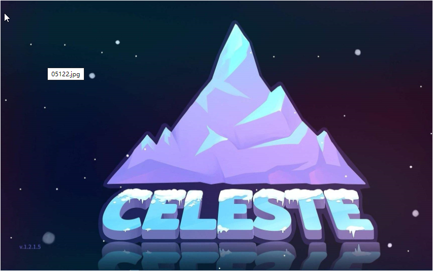
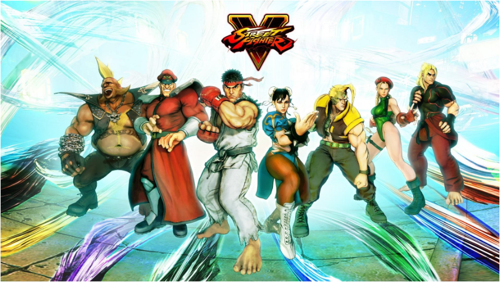

开发者从玩家多样性的角度来思考游戏的难度设定
我想简单说说游戏难度设定这个问题。
首先我要说的是“难度（difficulty）”这个词跟我想做的东西，也就是策略游戏并没有特别大关系，至少是不应该有。 任何一个优秀的多人在线策略游戏都会有匹配系统，为玩家找一个实力相当的对手，人们认为这样的游戏就做到了“难 度平衡”。我认为在单人游戏中也应该做到这一点，对此我还写过相关文章，并在Auro中实践。
但是本文的讨论是针对非策略向的单人游戏，比如《只狼》，或者去年的《蔚蓝》。“难度”一词在这些游戏中显得更 加有意义：要完成某个任务和/或者打通这个游戏有多难？这是一个非固定的标准，但我们可能会说像《只狼》《血源 诅咒》这样的游戏比《星之卡比毛线传说》《最终幻想15》更难打。

首先我要说的是“难度（difficulty）”这个词跟我想做的东西，也就是策略游戏并没有特别大关系，至少是不应该有。 任何一个优秀的多人在线策略游戏都会有匹配系统，为玩家找一个实力相当的对手，人们认为这样的游戏就做到了“难 度平衡”。我认为在单人游戏中也应该做到这一点，对此我还写过相关文章，并在Auro中实践。
但是本文的讨论是针对非策略向的单人游戏，比如《只狼》，或者去年的《蔚蓝》。“难度”一词在这些游戏中显得更 加有意义：要完成某个任务和/或者打通这个游戏有多难？这是一个非固定的标准，但我们可能会说像《只狼》《血源 诅咒》这样的游戏比《星之卡比毛线传说》《最终幻想15》更难打。
游戏设计师，同时也是纽约大学教授Naomi Clark曾说过这样的话：
“完成度达到100%、发现所有内容、实现全方位击杀，这样的游戏体验相比较为随性、不刻意追求的游戏体验更好或者 是更有意义吗？我玩游戏已经有四十年了，做游戏也有二十年了，但我仍然不敢说这个问题有答案。”
关于Naomi Clark在推文后所附的文章，我认同其中的主要观点“难度并不是只有一个标准”，但有点偏离这篇文章的 主题。非策略向的单人游戏技能系统很狭隘(狭隘算是我对这类游戏用的最重的词之一了)，但是这并不意味着它不能给 人带来沉浸感或者人们感觉不到被它排斥在外。
我认为Naomi的观点是这样的：“如果我打到75%然后放弃了，这样的游戏体验肯定是比不上100%完成度的，这种想法对 吗？”我觉得真的很难回答。但是如果你只打了30%？15%？在某些时候，我确实认为可以说你与这个游戏的互动可能没 有那么有意义。
电子游戏（至少是这类的电子游戏）是可消耗的人造文化产品。同样，我也认可在某些情况下用户的消费方式就是成为 游戏中的胜者、看到结局。这样你就可以大胆地参与到社区中，不怕被剧透。发言的时候你心里有底，因为你了解整个 游戏，知道自己在说什么，不存在什么没有发现的转折点。
虽然非策略向的高难度单机游戏大部分都不是我的菜，但就个人而言，我一般不会说“我玩过那个游戏”，我觉得这样 说有点不太对。这些游戏我通常玩半个小就放弃了，每次都觉得我是个文化意义上的局外人。

“完成度达到100%、发现所有内容、实现全方位击杀，这样的游戏体验相比较为随性、不刻意追求的游戏体验更好或者 是更有意义吗？我玩游戏已经有四十年了，做游戏也有二十年了，但我仍然不敢说这个问题有答案。”
关于Naomi Clark在推文后所附的文章，我认同其中的主要观点“难度并不是只有一个标准”，但有点偏离这篇文章的 主题。非策略向的单人游戏技能系统很狭隘(狭隘算是我对这类游戏用的最重的词之一了)，但是这并不意味着它不能给 人带来沉浸感或者人们感觉不到被它排斥在外。
我认为Naomi的观点是这样的：“如果我打到75%然后放弃了，这样的游戏体验肯定是比不上100%完成度的，这种想法对 吗？”我觉得真的很难回答。但是如果你只打了30%？15%？在某些时候，我确实认为可以说你与这个游戏的互动可能没 有那么有意义。
电子游戏（至少是这类的电子游戏）是可消耗的人造文化产品。同样，我也认可在某些情况下用户的消费方式就是成为 游戏中的胜者、看到结局。这样你就可以大胆地参与到社区中，不怕被剧透。发言的时候你心里有底，因为你了解整个 游戏，知道自己在说什么，不存在什么没有发现的转折点。
虽然非策略向的高难度单机游戏大部分都不是我的菜，但就个人而言，我一般不会说“我玩过那个游戏”，我觉得这样 说有点不太对。这些游戏我通常玩半个小就放弃了，每次都觉得我是个文化意义上的局外人。
人们似乎要达到某个条件才“有资格”谈论这个游戏，或者才感觉这个游戏属于你、跟你有关系，但电子游戏的文化不应该
是这样的。尽管如此，我们得认识到当下的圈子就是这样。我认为比较好的做法是开发者提供一个简单模式、作弊模式等等，
降低接触内容的门槛，让更多人享受到完整的游戏体验。
“玩家声望（gamer cred）”这个东西让我想要嗤之以鼻，因为我年轻的时候就已经受够了。事实上，对很多人来说，电子 游戏是一个不可忽视的文化现象，就像大家会在一起讨论喜欢的音乐一样，生活中也有热衷于讨论游戏的人。如果你没有打 通游戏，人们就会觉得你是假玩家、装腔作势的人。
更糟糕的一点是，很多玩家都赞同这种看法。
排外意识
“专属性”这个东西是具有一定价值的。它指的是只有少数人可以做的某件事、可以接触某个东西。我觉得重点在于为什么 人们认为专属内容值得以排外为代价？
我是个男性，我可以告诉你我的成长经历。出于各种各样的原因，有些游戏我必须得玩（或者不能玩）。因此，我变得非常 擅长打格斗游戏、FPS游戏、RTS游戏、平台游戏等等——也就是一堆有难度、节奏快、有精准执行要求的游戏。

“玩家声望（gamer cred）”这个东西让我想要嗤之以鼻，因为我年轻的时候就已经受够了。事实上，对很多人来说，电子 游戏是一个不可忽视的文化现象，就像大家会在一起讨论喜欢的音乐一样，生活中也有热衷于讨论游戏的人。如果你没有打 通游戏，人们就会觉得你是假玩家、装腔作势的人。
更糟糕的一点是，很多玩家都赞同这种看法。
排外意识
“专属性”这个东西是具有一定价值的。它指的是只有少数人可以做的某件事、可以接触某个东西。我觉得重点在于为什么 人们认为专属内容值得以排外为代价？
我是个男性，我可以告诉你我的成长经历。出于各种各样的原因，有些游戏我必须得玩（或者不能玩）。因此，我变得非常 擅长打格斗游戏、FPS游戏、RTS游戏、平台游戏等等——也就是一堆有难度、节奏快、有精准执行要求的游戏。
有很多电子游戏其实很相似，所以从一个游戏玩到另一个游戏，实际上你是在积累通用技能基础。那些没有一直在玩FPS
游戏的人，当他们再玩一款新游戏时就会觉得没那么好上手。FPS的设计概念仅仅是利用鼠标控制画面，用WASD移动，
但并不是所有人都能适应。
有很多人就是没有时间玩游戏，因为他们要打两份工，或者有家人需要照顾，或者其它各种原因。还有另一些人，他们 有不同的能力缺陷，所以打游戏对他们来说并不是那么容易的事。
如果你没注意到的话，我提醒一下现在还出现了一点文化方面的问题——有些人对非传统玩家群体日渐提升的地位十分 排斥。我认为高难度游戏在一定程度上也起到了推动作用。
这些并不是竞技游戏，然而开发者们通过提升游戏难度促成了这一点。有些“赢家”是因为有毅力/时间/身心健康才能 坐在那反复尝试、练习，直到打出满意的结局。而另一些想要尝试当下热话题热度极高的游戏的人，基本上都受到了某 种意义上的惩罚，遭遇嘲讽。
有很多人就是没有时间玩游戏，因为他们要打两份工，或者有家人需要照顾，或者其它各种原因。还有另一些人，他们 有不同的能力缺陷，所以打游戏对他们来说并不是那么容易的事。
如果你没注意到的话，我提醒一下现在还出现了一点文化方面的问题——有些人对非传统玩家群体日渐提升的地位十分 排斥。我认为高难度游戏在一定程度上也起到了推动作用。
这些并不是竞技游戏，然而开发者们通过提升游戏难度促成了这一点。有些“赢家”是因为有毅力/时间/身心健康才能 坐在那反复尝试、练习，直到打出满意的结局。而另一些想要尝试当下热话题热度极高的游戏的人，基本上都受到了某 种意义上的惩罚，遭遇嘲讽。